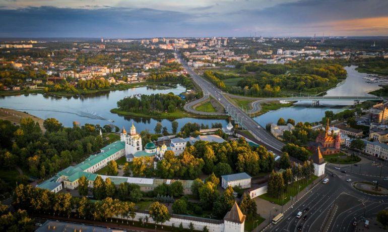
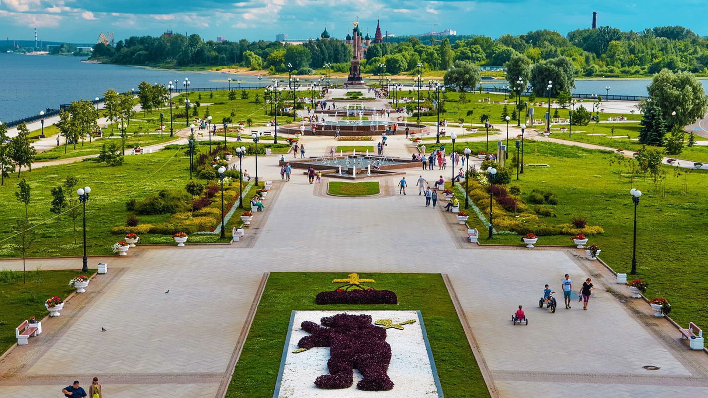
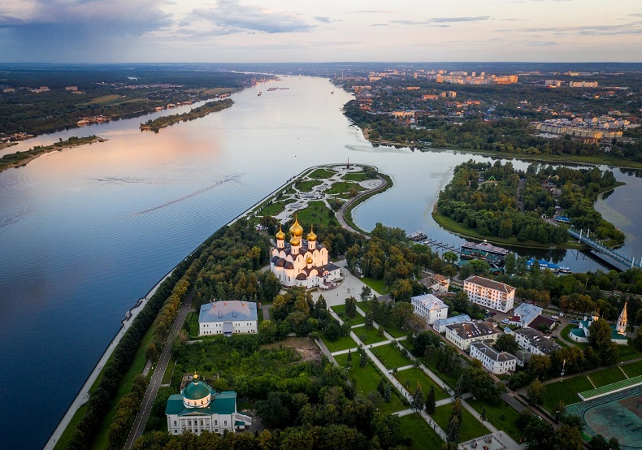
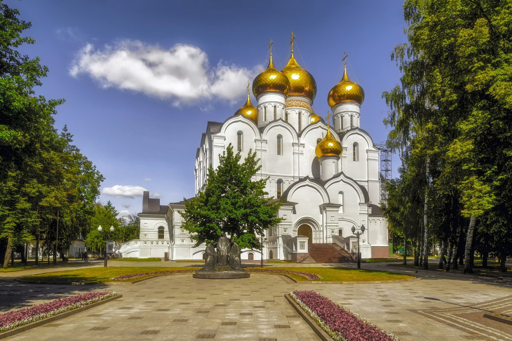

0
дней0
часов0
минут0
секунд
1. Дружинин Дмитрий Сергеевич, д.м.н. врач невролог, нейрофизиолог, специалист в области изучения нервно-мышечной патологии.
2. Войтенков Владислав Борисович, к.м.н. Заведующий отделением функциональной диагностики, ФГБУ «Детский научно-клинический центр инфекционных болезней».
1. PhD, Zhuzanna Aranyi “Hour-Glass Like Constriction of Peripheral Nerve and other variant Neuralgic Amyotrophy”. Hungary – Online Ранее выражала готовность прочитать онлайн доклад. Является ведущим мировым экспертом в области диагностики Невралгической амиотрофии.
2. Дружинин Д.С. «Комплексная диагностика вариантов невралгической амиотрофии Персонейдж-Тернера», д.м.н. ЯГМУ Прочитает доклад о подходах к диагностике редких забоолеваний применительно к срединному нерву
3. Войтенков В.Б. (тема уточняется) – к.м.н. Санкт-Петербург.
4. Проф Команцев В.Н. «Электрофизиологическая диагностика нейрональных повреждений», профессор, д.м.н., Санкт-Петербург.
5. Дружинина Е.С. «Вариант фасцикулярной констрикции срединного нерва: диагностика, терапия» - Москва, к.м.н. РНИМУ им Пирогова Прочитает серию кейсов о фасцикулярной констрикции нервов.
6. Войтенков В.Б. (тема уточняется) – к.м.н. Санкт-Петербург.
7. Смирнова А.Н. (тема уточняется) – Санкт-Петербург.
8. Посохина О.В. (тема уточняется) – Санкт-Петербург.
9. Новиков М.Л. «Хирургическое лечение фокальной констрикции периферического нерва», травматолог-ортопед, микрохирург. Прочитает основные подходы к хирургическому лечению фокальной констрикции нервов, а также другие подходы к терапии повреждений периферических нервов и лицевого паралича.
10. Ковальчук М.А. «Диагностические аспекты мультифокальной моторной нейропатии с блоками проведения», к.м.н. ГКБ им Буянова, Москва Доклад по собственным наблюдениям случаев мультифокальной моторной нейропатии с блоками проведения.
11. Проф Баранова Н.С. «Диагностические подходы к диагностике и лечению инфекционного поражения нервной системы», проф, д.м.н. ЯГМУ Имеет большой опыт лечения и диагностики инфекционных поражений нервной системы. Главный невролог Ярославля и Ярославской Области.
12. Смирнов П.С. «Электрофизиологическая диагностика интранатальных повреждений плечевого сплетения у детей: основные диагностические подходы», «Мотус», Ярославль. Специалист центра Мотус в области диагностики именно применительно к интранатальным повреждениям плечевого сплетения – расскажет подходы и собственный опыт.
13. Булах О.В. «Электрофизиологические и МРТ корреляции у пациентов с разными вариантами миопатий», МЦ «Мирт» г. Кострома Специалист по ЭМГ, ЭЭГ, которая также имеет опыт в сопоставлении с МРТ мышц.
14. Никанорова Т.Ю. «Электрофизиологические находки у пациентов с гипотиреозом», к.м.н., МСЧ РЖД, Ярославль. Докторант кафедры имеет много научных трудов по изучению гипотиреоза. Имеет группу пациентов с нейрофизиологическими характеристиками при гипотиреозе.
Для регистрации на конференцию, отправьте сообщение в свободной форме здесь с пометкой "иду на конференцию".
Программа конференции Ярославский НейроEvent2022 - СКАЧАТЬ